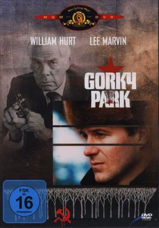
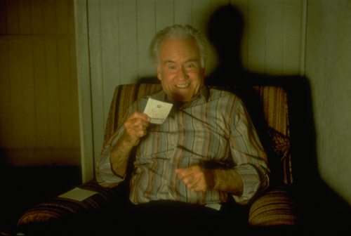
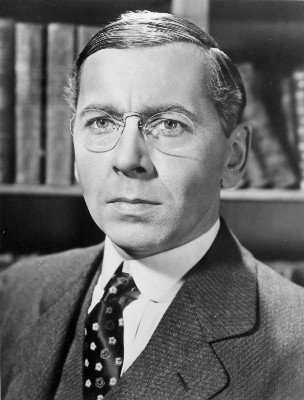

#2923 Gorky Park
 
 IMDB-Wertung: 6.8 / 10
IMDB-Wertung: 6.8 / 10  Metascore: 0
Metascore: 0 
Im Moskauer Gorki-Park werden drei Leichen mit enthäuteten Gesichtern gefunden, die jemand mit jeweils einer Kugel aus einer KGB-Waffe erschossen hat. Die Ermittlungen führt der russische Polizist Arkady Renko (William Hurt), Sohn eines Generals. Er wird schnell auf den Amerikaner William Kirwill (Brian Dennehy) und die Russin Irina (Joanna Pacula) aufmerksam. Es stellt sich heraus, dass Kirwill ein Bruder eines der Opfer ist und den Mörder sucht. Renko bittet den Professor Andreev darum, anhand der Schädel der Opfer ihre Gesichter zu rekonstruieren. Andreev sagt zuerst, er würde keine Aufträge für die Polizei (Miliz) oder für den KGB ausführen. Renko appelliert an die Eitelkeit des Professors und Andreev willigt schließlich ein.
Jahr: 1983
Dauer: 128 Minuten
FSK: 16
Land: USA Studio: Orion PicturesTonspuren:
Untertitel:
Auflösung: 1080p (1920x1040) Größe: 9123 MB
Genre: Thriller, Drama, Krimi, Mystery
Regisseur:  Michael Apted
Michael Apted
Drehbuch: Martin Cruz Smith, Dennis Potter
Soundtrack: James Horner
Darsteller:
 William Hurt als Arkady Renko
William Hurt als Arkady Renko Lee Marvin als Jack Osborne
Lee Marvin als Jack Osborne Brian Dennehy als William Kirwill
Brian Dennehy als William Kirwill-  Ian Bannen als Iamskoy
- Joanna Pacula als Irina Asanova
 Michael Elphick als Pasha
Michael Elphick als Pasha- Richard Griffiths als Anton
-  Alexander Knox als General
- Alexei Sayle als Golodkin
 Ian McDiarmid als Prof. Andreev
Ian McDiarmid als Prof. Andreev- Rikki Fulton als Maj. Pribluda
- Niall O'Brien als KGB Agent Rurik
- Henry Woolf als Levin
- Tusse Silberg als Natasha
- Patrick Field als Fet
- Juuso Hirvikangas als James Kirwill
- Marjatta Nissinen als Valerya Davidova
- Heikki Leppänen als Kostia Borodin
- Lauri Törhönen als Director
- Elsa Salamas als Babushka
- Anatoli Davydov als KGB Agent Nicky
- Lasse Lindberg als Shadower
- Jussi Parviainen als Shadower
- Black Pearls als Russian Tea Band
- Bad Sign als Rock & Roll Band
Datei: X:\1983\Gorky Park (1983, FSK16, 1920x1040).mkv seit 31.12.2015
Festplatte: HD 1980-1986
 Es gibt insgesamt 35 Filme in der Gruppe '1983'
Es gibt insgesamt 35 Filme in der Gruppe '1983'